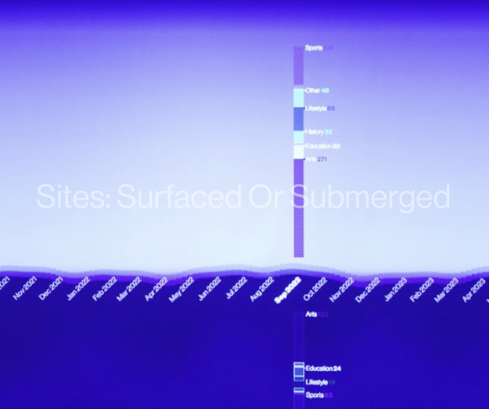
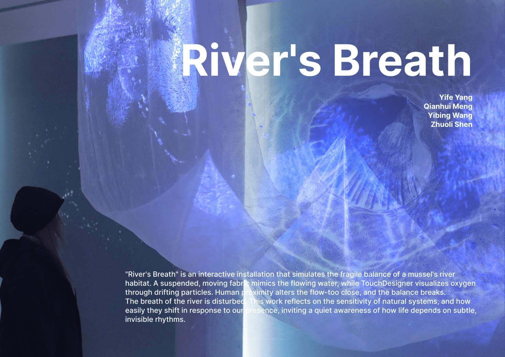
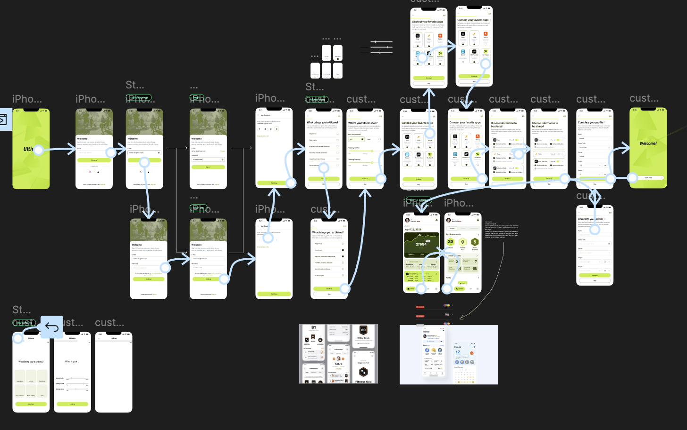
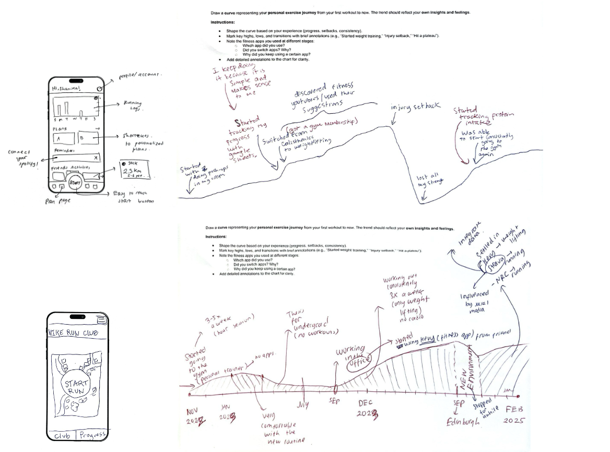
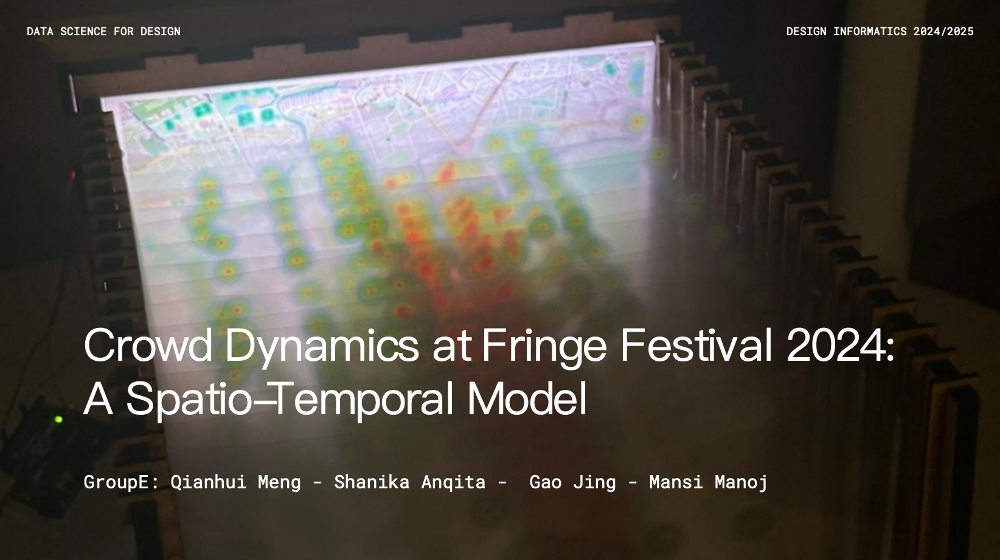
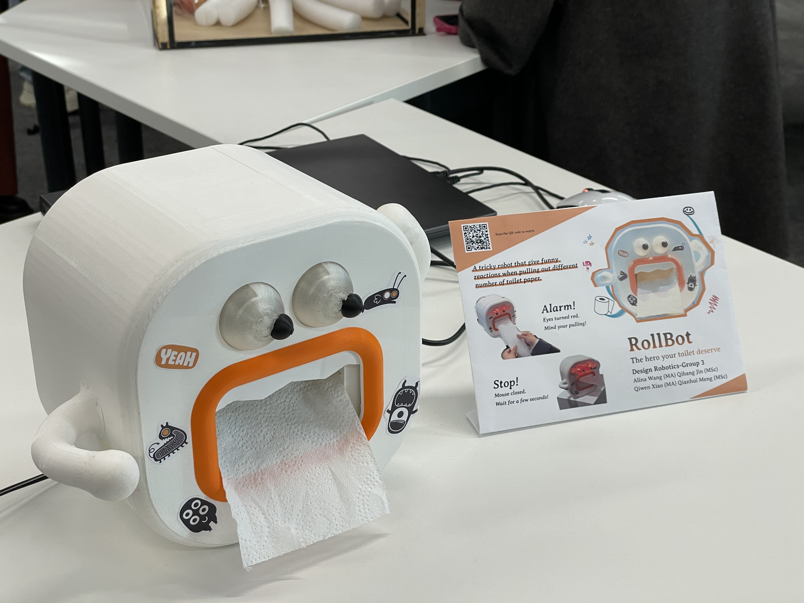

Click for project
website.
Click for user testing
video.
Introduction:This motion-activated piece explores how the topics of Scotland’s web
content have shifted over time, from when each site was added to the Scotland on the Internet collection
to whether it remains online or has vanished into dead links.
Here, you step into the mind of the archivist, influenced by current events, trends, curiosity, and
personal judgement. The visualization is not only about data patterns but also about perspective. What
gets saved, and what doesn’t, depends on who is looking.
Sites: Surfaced or Submerged
04/2025-08/2025

River's Breath
02/2025-05/2025

Click for the
video.
Introduction: “River’s Breath” is an interactive installation that simulates the delicate balance of a mussel’s river habitat. A suspended, moving fabric mimics the flowing water, while TouchDesigner visualizes oxygen through drifting particles. Human proximity alters the flow — too close, and the balance breaks. The breath of the river is disturbed.
This work reflects on the sensitivity of natural systems and how easily they shift in response to our presence, inviting a quiet awareness of how life depends on subtle, invisible rhythms.
Introduction: “River’s Breath” is an interactive installation that simulates the delicate balance of a mussel’s river habitat. A suspended, moving fabric mimics the flowing water, while TouchDesigner visualizes oxygen through drifting particles. Human proximity alters the flow — too close, and the balance breaks. The breath of the river is disturbed.
This work reflects on the sensitivity of natural systems and how easily they shift in response to our presence, inviting a quiet awareness of how life depends on subtle, invisible rhythms.
Ultimo
03/2025-04/2025

Explore the live prototype built in Figma: here.
Introduction: Investigating the challenges international students face in sustaining motivation for health, fitness, and nutrition in an increasingly digital world. Our design takes a unique approach by integrating training, running, and nutrition into a single, seamless platform—an area where existing apps often remain fragmented.
Introduction: Investigating the challenges international students face in sustaining motivation for health, fitness, and nutrition in an increasingly digital world. Our design takes a unique approach by integrating training, running, and nutrition into a single, seamless platform—an area where existing apps often remain fragmented.
Human Factors in User Research
03/2025-04/2025

Click for details.
Introduction: This study aims to propose user experience (UX)-driven redesign suggestions for the Nike Run Club (NRC) application. To achieve that, the study is conducted in two steps. First, it explores international college students’ exercise habits and interactions with fitness applications through user interviews, usability tests, and cultural probes, gaining insight into their personal experiences. Second, based on these findings, the study develops redesign recommendations for NRC, with a focus on enhancing user experience under the guidance of human factors.
To address research objectives and research questions, I employed a qualitative approach and integrated one each of say, do and make methods. The link above leads to the detailed content.
Introduction: This study aims to propose user experience (UX)-driven redesign suggestions for the Nike Run Club (NRC) application. To achieve that, the study is conducted in two steps. First, it explores international college students’ exercise habits and interactions with fitness applications through user interviews, usability tests, and cultural probes, gaining insight into their personal experiences. Second, based on these findings, the study develops redesign recommendations for NRC, with a focus on enhancing user experience under the guidance of human factors.
To address research objectives and research questions, I employed a qualitative approach and integrated one each of say, do and make methods. The link above leads to the detailed content.
Fringe Festival 2024 Dynamics
10/2024-11/2024

Click for the video.
Introduction: Large-scale events like the Edinburgh Fringe Festival create urban congestion and crowd distribution, straining city infrastructure and impacting residents and visitors. Our project addresses this by visualizing crowd density patterns using ticket purchase data, developing a spatio-temporal model to track movement across the city. This model aids decision-making and supports future optimization of venue arrangements.
Introduction: Large-scale events like the Edinburgh Fringe Festival create urban congestion and crowd distribution, straining city infrastructure and impacting residents and visitors. Our project addresses this by visualizing crowd density patterns using ticket purchase data, developing a spatio-temporal model to track movement across the city. This model aids decision-making and supports future optimization of venue arrangements.
Rollbot
10/2024-11/2024

Click for the video.
Introduction: Overuse is a surprisingly common habit, whether it’s genuinely needed for cleaning or simply mindless behavior. This realization sparked an unconventional idea: imagine a tissue box that doesn’t just hold paper but adds a playful twist to the experience.
Therefore, we designed a tissue box, RollBot, transforming this ordinary object into an amusing companion, injecting hilarity and mischief into every interaction. If you pull gently, everything is fine. But pull too much, and it will glare at you with glowing red eyes. If the overuse persists, it clamps its teeth shut, refusing to cooperate. It’s like having a mischievous prankster lurking in your bathroom!
Introduction: Overuse is a surprisingly common habit, whether it’s genuinely needed for cleaning or simply mindless behavior. This realization sparked an unconventional idea: imagine a tissue box that doesn’t just hold paper but adds a playful twist to the experience.
Therefore, we designed a tissue box, RollBot, transforming this ordinary object into an amusing companion, injecting hilarity and mischief into every interaction. If you pull gently, everything is fine. But pull too much, and it will glare at you with glowing red eyes. If the overuse persists, it clamps its teeth shut, refusing to cooperate. It’s like having a mischievous prankster lurking in your bathroom!